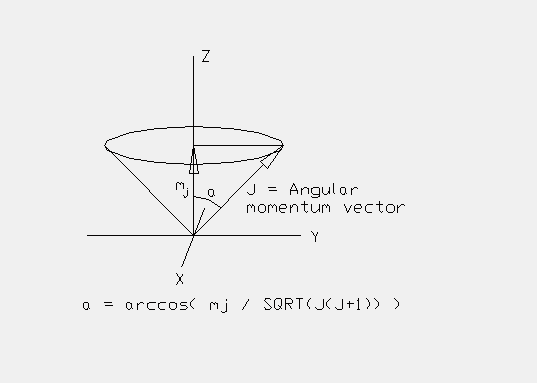

But the big question I have with respect to the great circles is "Is there any physics in this? Is there any physical system (atoms, nucleus, etc.) whose behavior or properties can be explained by energy in motion along great circle energy railroad tracks?" I have been able to identify most of the VE's primary LCD spherical triangle great circle angles with an equation from quantum mechanics which gives the angle between a particle's angular momentum vector and a "precession" axis. (This "precession" axis is defined as some prefered direction in space about which, in the q.m. model, the angular momentum vector is precessing. Note that in quantum mechanics this is only given as a model. It is not necassarily what is really happening.) For example, the "precession" axis may be defined as the direction of an imposed magnetic field. But the association is not complete and I don't (yet) see how this helps explain the quantization of angular momentum in quantum mechanics. I'll give this association in the tables.
In quantum mechanics the magnitude of the projection of the angular
momentum vector onto the "precession" axis is quantized and is given by
the equation
sqrt(J(J+1)) cos(a) = mj
where sqrt(J(J+1)) is the magnitude of the angular momentum and
mj is the magnitude of the projection of angular momentum
onto the "precession" axis. "a" is the angle between them. So,
a = arccos( mj / sqrt(J(J+1)) )
"arccos" is the inverse of the cos function. I'll write this as "acos".
It is found that mj and J can only be integers or half-integers.
Specifically:
J = 0, 1/2, 1, 3/2, 2, ...
then, for whatever value J has, mj is restricted to
-J, -(J-1), -(J-2), ..., 0 or 1/2, ...,(J-2), (J-1), J
In the tables I give the mj and J values which correspond
to the LCD triangle great circle angular data (all in degrees). In
some of the entries, an angle like 90 or 180 degrees needs to be
added or subtracted in order for the quantum mechanical angle to
match the great circle angle. As an example I use the notation
90 - acos(7,8)
for the angle given by 90 - arccos( 7 / sqrt(8(8-1)) ).
In the tables, "asin" is the inverse of the trig sine function.
Usage Note: My work is copyrighted. You may use my work but you may not include my work, or parts of it, in ant for-profit project without my consent.